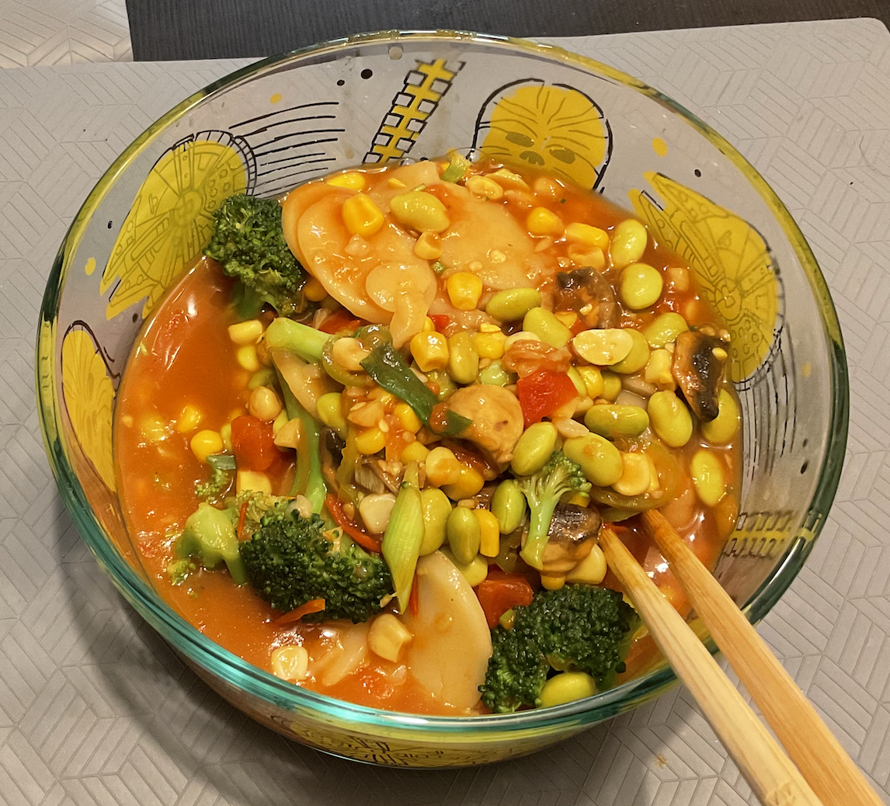

~Yummy~ Tomato Rice Cake Soup ~Yummy~

Description
Tomato Rice Cake Soup is a delicious and hearty soup that is perfect for a cold winter day.
It is made with fresh tomatoes, rice cakes, and a variety of vegetables.
This soup is easy to make and is sure to warm you up from the inside out.
Ingredients
- 2 tomatoes
- 1 bag of rice cake
- 2 serrano peppers
- 1000ml water
- a lot of corns
- a lot of green beans
- some brocoli
Steps
- Boil the water in a pot.
- Chop the tomatoes and serrano peppers into small pieces.
- Add the tomatoes, serrano peppers, and rice cakes to the boiling water.
- Let it cook for 10 minutes.
- Add the corns, green beans, and brocoli to the pot.
- Let it cook for another 10 minutes.
- Season with pepper to taste.
- Enjoy!